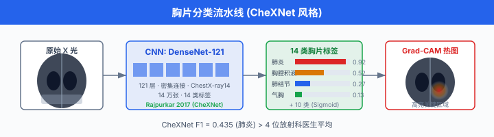
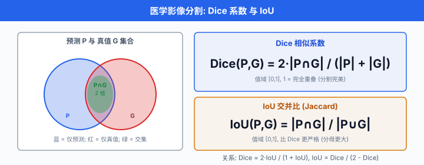
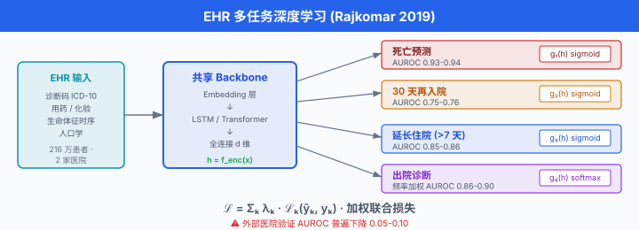
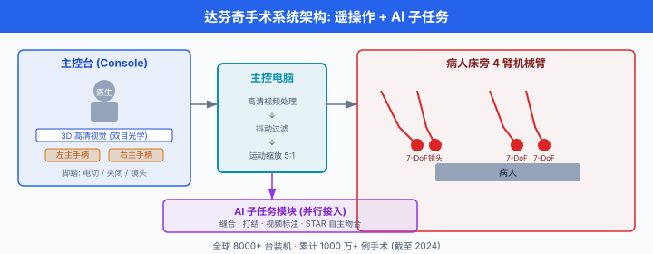
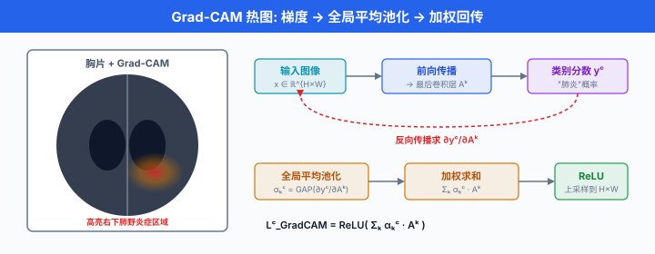

医疗健康¶
一句话总结：医疗 AI 是把"数据驱动的统计学习"撞上"零容错的临床现实"，它用影像、文本与多模态数据把诊断、用药、手术的某些环节做到放射科主治以上，但每一行"省一秒"都必须经过监管、隐私、泛化与可解释性的连环拷问。
医疗是 AI 落地最复杂的一块试金石。 一张胸片里 1 mm 的磨玻璃影可能是早期肺癌，也可能只是没擦干净的胶片伪影；一段 5 分钟的电子病历可能藏着换过 17 种药的过敏史，也可能只是模板复制粘贴；一台微创手术的 0.5 mm 偏差足以切断迷走神经。 AI 不能容忍错，但它恰恰是用"会错"的梯度下降训出来的。 怎么在"会错"与"不能错"之间架桥，是这一节真正想讲的事。 我们顺着医学影像、电子健康档案、临床辅助决策、药理基因组、医疗 LLM、监管与伦理这条主轴，走一遍 AI 在医院里究竟走到了哪一步.
🗺️ 本章导览¶
- 本章覆盖 AI for Healthcare 的核心：医疗健康全场景
- 01. AI 在金融：风控与量化 (上一节之一)
- 02. 蛋白质设计：序列→结构→功能 (上一节之二)
- 03. 药物发现：分子生成与虚拟筛选 (上一节之三)
- 04. 智能体系统：多智能体编排 (上一节之四)
- 05. 医疗健康 (本节)：影像、EHR、临床决策、手术机器人、药理基因组、医疗 LLM、监管与挑战
1. 医学影像：AI 看片子，看得到"专家看不到的"¶
1.1 影像分类：从 CheXNet 说起¶
胸片 (chest X-ray) 是全世界拍得最多的影像，也是 AI 最早能"打平资深医生"的任务。 2017 年，Stanford 的 Pranav Rajpurkar 等人发布 CheXNet，用 121 层的 DenseNet 在 ChestX-ray14 (14 万张、14 个标签) 上训练，在肺炎 (pneumonia) 分类的 F1 分数上超过 4 位放射科医生的平均水平1.
- 这件事的真正意义不是"F1 高 0.05"，而是"深度卷积网络 (CNN) 在公开胸片数据集上，第一次稳定击败人类专家"；自此之后，影像组学 (radiomics) 与深度学习的交叉正式起飞。

- 但 CheXNet 也有阴影。 一年后，Zech 等人 (PLOS Medicine, 2018) 复现并指出：模型在不同医院的数据上学到的"肺炎模式", 有一部分是 X 光机型号与摆位角度. 也就是说，模型把"哪个医院拍的"当成了"哪种肺炎"，这就是医疗影像里反复出现的分布漂移 (distribution shift) 病灶。
1.2 乳腺癌筛查：McKinney 2020 把"假阳性/假阴性"同时砍下来¶
2020 年 1 月，Scott Mayer McKinney 等人 (Google Health + DeepMind + 多家医院) 在 Nature (577: 89–94) 发表的乳腺癌筛查研究成为医疗 AI 史上第一个被同行评审认可的大规模前瞻性评估2.
- 数据：美国 25 万+ 例 + 英国 2.5 万+ 例，全部为确诊标签 (活检 + 长期随访)
- 模型：改良的 Inception-v3 + 多视角融合 (4 张 mammogram 一起判读)
- 关键指标:
| 维度 | 美国数据集 | 英国数据集 |
|---|---|---|
| 假阳性率 (FP) 下降 | 5.7% | 1.2% |
| 假阴性率 (FN) 下降 | 9.4% | 2.7% |
| AUC vs. 平均放射科医生 | 高 11.5% | — |
| 阅片工作量 (第二读者) 下降 | — | 88% |
-
注意：这是"辅助"而非"替代" — 模型先筛一遍，再交给医生做最终诊断。 这种"AI 减负、医生兜底"的双读者制，后来被欧盟、英国、瑞典的乳腺筛查指南正式采用。
-
进一步深挖：后续争议也来自 2021 年 Nature 的回顾文章 (Erickson et al.) 指出，大量乳腺 AI 研究在内部数据上 AUC 0.9+，但换医院就掉到 0.6. "AUC 0.9" 不等于"可用"，真正的可用性要在外部验证 (external validation) 上看。
1.3 医学影像分割：nnU-Net 的"开箱即赢"¶
图像分类告诉你"有没有", 图像分割 (image segmentation) 告诉你"在哪儿、占多大、长什么样". 这是放疗靶区勾画、术前规划、随访测量的核心环节。
- nnU-Net (Fabian Isensee et al., Nature Methods 18: 203–211, 2021，先发 arXiv 1809.10486)3，是个"小聪明大智慧"的工程典范：不发明新架构，只把 2D / 3D U-Net + 自动预处理 + 自动超参 + 自动后处理 + 五折交叉验证 + 集成 (ensemble) 写成一个自适应的流水线:
-
在 Medical Segmentation Decathlon (MSD, 10 个任务) 上，nnU-Net 拿了其中 7 个第一，3 个第二，平均 Dice 系数 (Dice similarity coefficient) 大幅领先比赛时所有其它方法。
-
公式上，假设预测 \(P\) 与真值 \(G\) 都是二值掩码:
- 为什么这么猛? 因为它把"实验科学的体力活" (调参、改 crop、选 backbone) 完全自动化，把研究者从"炼丹"里解放出来。 截至 2026 年，nnU-Net 仍是 medical segmentation 引用数最高的开源项目 (GitHub > 8k stars)，且几乎所有 SOTA 模型 (nnFormer, Swin UNETR, MedSAM) 都用它做 baseline.

1.4 基础模型进入医学影像：MedSAM 与 Segment Anything in Medicine¶
2023 年，Meta 发布 Segment Anything Model (SAM) 让"一张提示框 + 一张图 → 掩码"成为可能。 2024 年 1 月，Jun Ma 等人 (多伦多大学 + 华为 + 复旦) 在 Nature Communications (15: 654) 发表 MedSAM4，用 158 万张图像-掩码对 (涵盖 11 种模态：CT / MRI / X 光 / 超声 / 病理 / 皮肤镜 / 眼底) 微调 SAM:
- 主干冻结 (frozen) + 轻量 mask decoder 微调，训练时间约 1 周 (8 张 A100)
-
在 21 个内部 + 5 个外部公开测试集上，平均 Dice 提升 4-8 个百分点，且零样本迁移 (zero-shot) 到 12 个未见过任务仍能保持 0.85+ Dice
-
临床意义：医生画一个"框" (bounding box), AI 立刻给出"准确轮廓" — 放射科工作流里"勾画 ROI (region of interest)"这一步，从分钟级降到秒级。 但要注意：MedSAM 不判别有没有病灶，只勾画. 把它和分类器级联 (cascade)，才是临床工作流。
1.5 MRI / CT 重建：从欠采样到全图像¶
核磁共振 (MRI) 慢，一张脑部 T2 序列要 20-30 分钟。 AI 重建 (AI-based reconstruction) 用深度网络在 k 空间 (k-space, MRI 的频域表示) 或图像域做"补全":
- 其中 \(M\) 是欠采样掩码，\(\mathcal{R}_{\theta}\) 是学习到的去混叠 / 去噪声残差
-
代表: Facebook AI + NYU 2018 年 fastMRI 项目 (公开数据集 + 比赛); Siemens Deep Resolve Boost、GE AIR Recon DL、Canon AiCE 已获 FDA 510(k) 上市，临床部署下把扫描时间砍 30-50%
-
CT 上：低剂量 CT (LDCT) 降噪 (e.g., 2016, Chen et al. TIP 的 RED-CNN) 是更经典的题目 — X 光剂量减半，AI 把噪声"压"回去
1.6 病理切片分析：Gigapixel 的挑战¶
一张全切片病理图像 (whole-slide image, WSI) 通常 \(100{,}000 \times 100{,}000\) 像素 (10 gigapixel 量级). 直接喂 CNN 不可能，标准做法是 patch-level 训练 + slide-level 聚合:
import torch
import torch.nn as nn
class SlideLevelModel(nn.Module):
"""病理 WSI 简化版: patch CNN + attention MIL 聚合"""
def __init__(self, c_feat=512, n_classes=2):
super().__init__()
self.patch_cnn = torch.hub.load(
'pytorch/vision', 'resnet18', pretrained=True)
self.patch_cnn.fc = nn.Identity() # 去掉分类头
self.attn = nn.Linear(c_feat, 1) # attention MIL
self.head = nn.Linear(c_feat, n_classes)
def forward(self, patches):
# patches: (N, 3, 224, 224) - 一张 WSI 的 N 个 patch
h = self.patch_cnn(patches) # (N, 512)
a = torch.softmax(self.attn(h), dim=0) # (N, 1) 注意力权重
z = (a * h).sum(dim=0, keepdim=True) # (1, 512) 聚合
return self.head(z) # (1, n_classes) 预测
-
代表: Paige.AI 2021 年 FDA 批准 Paige Prostate 首个 AI 病理诊断产品；2022 年 DeepPath (Paige) 进一步扩展至多器官。 CAMELYON16 / CAMELYON17 (淋巴结转移检测) 是经典 benchmark.
-
典型数字: Paige Prostate 在前列腺活检切片上，与病理学家相比减少 70% 的"漏诊" (false negative)，同时保持 95%+ 一致性。
2. 电子健康档案 (EHR) 与临床自然语言处理¶
2.1 EHR 是什么：不只是结构化表格¶
电子健康档案 (Electronic Health Record, EHR) 是医院信息化系统的核心，包含结构化字段 (诊断 ICD 码、用药、生命体征) 和非结构化文本 (放射学报告、出院小结、护理记录、医生自由备注). 一份完整的 EHR 通常横跨 5-10 年，包括:
- 人口学 (demographics)：性别、年龄、族裔、保险
- 病史 (problem list)：慢性病、手术、过敏
- 检验 (labs)：血常规、生化、微生物
- 用药 (medications)：处方、剂量、调整
- 影像 (imaging)：报告文本 + 链接到图像
- 临床笔记 (clinical notes): SOAP 格式 (Subjective / Objective / Assessment / Plan)
EHR 看起来"全是数"，实际上90% 信息藏在文本里 — 一份出院小结可能写"患者神清，精神可，食欲差，二便调"，这是临床 NLP 必须攻克的密码。
2.2 临床 NLP: ClinicalBERT 与 MedBERT¶
-
Alsentzer et al. (2019) Publicly Available Clinical BERT Embeddings (arXiv 1904.03323, NAACL BioNLP Workshop 2019)5 — 把 BERT 在 MIMIC-III (公开 ICU 数据，4 万+ 病人) 上继续预训练，得到 ClinicalBERT，在去识别化 (de-identification) 和 30 天再入院预测上击败基线。
-
Med-BERT (Rasmy et al., Sci. Rep. 11: 19717, 2021) — 在 2500 万+ EHR 上预训练，专门做疾病风险预测。
-
BioBERT (Lee et al., Bioinformatics 36: 1234–1240, 2020) — 在 PubMed 摘要 + PMC 全文本 (45 亿词) 上继续预训练 BERT.
-
Clinical-Longformer / Bio-ELECTRA / GatorTron (中佛罗里达大学，90 亿参数，在 820 亿词临床文本上预训练，2022) — 把上下文推到 4096+ tokens，能读完整份出院小结。
预训练目标 (masked language modeling, MLM) 的核心:
— 即：随机遮住 15% 的临床词，让模型用上下文猜回去。 看似简单，但 800 亿词的临床语料让模型"学到了"心内科的常用搭配 (e.g., "stemi" + "door-to-balloon" + 90 min).
2.3 ICD 编码自动化：病案室与 AI 的拉锯¶
国际疾病分类 (International Classification of Diseases, ICD) 是医保结算、流行病学统计的"通用语言". 一份出院病历要打几十甚至上百个 ICD 码 (e.g.，急性心梗 I21，房颤 I48, 2 型糖尿病 E11, ...), 人工编码是医院最耗时的后台工作之一，一个资深编码员一天处理 30-50 份。
- 2018 JAMIA: MSATT-KG (多尺度 attention + 知识图谱) 在 MIMIC-III 上把 micro-F1 推到 0.5+
- 2020 Nature Communications (Kim et al.): MS-CODA 引入对比学习，F1 提到 0.55
-
2022 JAMA Network Open: PLM-ICD 用预训练 LLM 进一步推到 micro-F1 0.59
-
商业影响：在美国，编码错误每年让医院损失约 $25 亿；一个好的 AI 编码器能直接把这笔钱"捞回来" 20-30%.
2.4 患者轨迹建模：Rajkomar 2018 npj Digital Medicine¶
Alvin Rajkomar 等 (Google) 2018 年发布 Scalable and accurate deep learning for electronic health records6，用 去标识化的 FHIR 格式 训练深度模型，在两大医院系统 (UCSF + 芝加哥大学) 上做四个任务:
| 任务 | AUROC |
|---|---|
| 院内死亡预测 (in-hospital mortality) | 0.93 – 0.94 |
| 30 天计划外再入院 (unplanned readmission) | 0.75 – 0.76 |
| 延长住院 (prolonged length of stay) | 0.85 – 0.86 |
| 所有出院诊断 (discharge diagnoses) | 0.86 – 0.90 (频率加权) |
-
这个工作的核心贡献不是单任务精度，而是一个统一模型同时处理多任务 — 之前的临床预测模型都是"一个模型一个病"，这里一个模型能预测"病人明天会不会死 / 出院会不会回来 / 得住多久".
-
公式：多任务共享 backbone，每个任务一个输出头
- 训练的损失是各任务加权和

- 后续争议: 2019 JAMA 的一篇评论指出，在外部医院验证上，Rajkomar 模型的 AUROC 普遍掉 0.05-0.10. 跨机构泛化仍是医疗 AI 的硬骨头。
3. 临床辅助决策 (Clinical Decision Support, CDS)¶
3.1 诊断辅助：从"猜"到"列清单"¶
诊断 AI 不是要"替代医生"，而是给出一个带概率排序的鉴别诊断清单 (differential diagnosis). 代表工作:
- DDxNet (现名 "Isabel")：输入症状 + 体征 + 检验，输出 top-10 可能诊断 + 罕见病提示
- OpenEvidence (2023)：把 PubMed 实时检索 + LLM 综合，给出"基于证据的回答" + 引用链接
-
Glass Health (2023)：一群前急诊科医生做的 AI 助手，输入病程摘要，输出 SOAP 草稿 + 文献
-
公式：一个"病 \(\to\) 症状"的条件概率 (贝叶斯视角)
- 简单贝叶斯太天真 — 现代 CDS 用神经网络 + 大规模电子病历，但基本思想一致：知道先验 + 似然，推后验。
3.2 用药建议：药物相互作用 + 剂量个体化¶
处方错误是医疗差错的第一大原因 (Institute of Medicine, To Err Is Human, 1999). AI 在两条线帮忙:
- 药物-药物相互作用 (DDI)：训练一个图神经网络，节点是药，边是已知或预测的相互作用
-
剂量个体化：用药代动力学 (pharmacokinetics, PK) + 药效学 (PD) + 患者特征 (年龄、肾功能、CYP 酶基因型) 预测最优剂量 — 这就是"治疗药物监测 (TDM)" 的 AI 化
-
经典系统：First Databank, Cerner Multum, Wolters Kluwer Medi-Span; AI 增强版：Amino (旧金山初创), InsightRx.
3.3 手术机器人：达芬奇 (Da Vinci) 与下一代¶
达芬奇手术系统 (Da Vinci Surgical System) 由 Intuitive Surgical 1999 年推出，截至 2024 年全球装机 8000+ 台，累计完成手术 1000+ 万例。 它不是一个自主机器人，而是一个遥操作 + 增强现实系统：医生在控制台看 3D 高清画面，通过手柄操控机械臂。
- 关键能力：7 自由度腕式器械 (人手 6 自由度) + 3D 视觉 + 抖动过滤 + 缩放 (motions scaling)
- 限制：没有力反馈 (haptic feedback)；长时间手术医生疲劳；触觉信息丢失

- 新一代:
- Hugo (Medtronic, 2021) — 模块化 + 触觉
- Versius (CMR Surgical，英国) — 紧凑 + 协作
- Da Vinci 5 (Intuitive, 2024) — 加 Force Feedback 模块 + 力传感器
- Mako (Stryker) — 关节置换专用
-
Rosa (Zimmer Biomet) — 神经外科 + 脊柱
-
AI 介入:
- 子任务自动化 (Surgical Sub-task Autonomy)：缝合、打结、组织牵拉 — 用模仿学习 (imitation learning) 训练
- 手术视频分析 (Surgical Data Science)：录下来，AI 标"哪一刀有问题"，用于术后复盘
-
JHU 2022: Johns Hopkins 的 Smart Tissue Autonomous Robot (STAR) 首次完成 猪肠自主吻合 (anastomosis)，完全无人工干预
-
数学上，视觉伺服 (visual servoing) 的目标:
— 即"在每个时刻，选择控制 \(u_t\) 让当前观测 \(s_t^{\text{current}}\) 朝目标 \(s_t^{\text{target}}\) 走，同时控制输入不要太暴力".
4. 药理基因组学 (Pharmacogenomics, PGx)¶
4.1 核心问题：同一种药，不同基因型¶
药物代谢酶 (主要是 CYP450 家族: CYP2D6, CYP2C19, CYP3A4 等) 的基因多态性 (polymorphism) 直接决定药效。 经典例子:
- CYP2C19 慢代谢者 (poor metabolizer, PM) 服用 氯吡格雷 (clopidogrel) 后活性代谢物不足，抗血小板效果差，支架血栓风险 翻 3-4 倍
- CYP2D6 慢代谢者服用 可待因 (codeine) 无法代谢成吗啡，镇痛失效；反之超速代谢者 (ultrarapid metabolizer) 可能吗啡过量中毒
- HLA-B*15:02 阳性患者服用 卡马西平 (carbamazepine) 严重皮肤反应 (SJS/TEN) 风险升高 10-100 倍，FDA 强制要求亚裔患者检测
4.2 临床决策支持：CPIC 与 DPWG¶
- CPIC (Clinical Pharmacogenetics Implementation Consortium)：把基因型-药物对应分级 (A, B, C, D), A 级强制建议，提供标准化用药推荐
- DPWG (Dutch Pharmacogenetics Working Group)：荷兰皇家药师协会，配套 KNMP 知识库
- 截至 2026 年，CPIC 已发布 25+ 药物基因对 指南，覆盖 100+ FDA 批准药物
4.3 AI 在 PGx 的角色¶
- 从基因组到表型：长读长测序 (PacBio, Oxford Nanopore) + 深度学习 (CYP2D6 star allele caller, e.g., Cyrius, 2021) 准确率达 99%+
- 多基因风险模型：用 PRS (polygenic risk score) + ML 预测 Warfarin 稳定剂量 (iWARP, JAMA 2017)
- 药物基因组 LLM: PharmaGKB + GPT-4 临床问诊，把"基因型→用药调整"做成对话
4.4 与 Ch19-03 的交叉¶
Ch19-03 讲"小分子如何被发现", Ch19-05 讲"小分子在体内如何被代谢/作用" — 两者是研发与使用的两端。 读者可对比: - Ch19-03 重点：\(\text{SMILES} \to \text{分子生成} \to \text{活性预测} \to \text{临床候选}\) - Ch19-05 重点：\(\text{基因型} \to \text{酶活性} \to \text{剂量调整} \to \text{临床决策}\)
5. 医疗大语言模型 (Medical LLM)¶
5.1 Med-PaLM 与 Med-PaLM 2 (Google, 2023)¶
Karan Singhal 等 (Google Research) 2022 年发布 Med-PaLM (arXiv 2212.13138), 2023 年发布 Med-PaLM 2 (arXiv 2305.09617, Nature 620: 172–180)7:
- 方法：在 PaLM 540B / PaLM 2 基础上，用指令微调 (instruction tuning) + 人类反馈强化学习 (RLHF) 适配医疗问答
- 评测: MultiMedQA 基准 (MedQA, MedMCQA, PubMedQA, MMLU 临床，...)
- 关键数据:
- Med-PaLM: MedQA 67.6%，比 SOTA 提升 17+ pp
- Med-PaLM 2: MedQA 86.5%，比 Med-PaLM 再提升 19 pp，接近人类医生水平
-
医生评估：Med-PaLM 2 在 9 个临床实用性维度中的 8 个 优于医生组 (p < 0.001)
-
重要警示：即便分数这么高，仍有约 5-7% 的回答包含错误或"幻觉"信息；临床部署必须配"医生最终审签".
5.2 其他医疗 LLM¶
- Meditron (EPFL, 2023) — Llama-2 70B + 持续预训练 PubMed + clinical notes, 7B/70B 两版，开源
- BioMistral (2024) — Mistral 7B + 医学语料，MIT 协议
- OpenBioLLM (Saama AI, 2024) — Llama-3 8B/70B 微调，在 USMLE 上 90%+
- 华佗 GPT (HuatuoGPT) (港中文 + 华为，2023) — 中文医疗对话，蒸馏 + RLHF
- 京东京准通 (京东健康，2023) — 电商背景，强调"导诊 + 处方审核"
- 华为盘古医疗大模型 (Pangu-Medical, 2023) — 联合多家三甲，强调"病历生成 + 影像 + 文献"三合一
- 通义仁心 (Qianwen-Med) (阿里，2024) — 通义千问基座，多模态 (图像 + 文本)
5.3 评测基准¶
- MedQA (USMLE-style, 4 选项，中英双语) — 最常见
- PubMedQA (PubMed 摘要 + 结论 yes/no/maybe) — 检索式
- MedMCQA (印度 AIIMS / NEET PG 风格) — 大规模
- MultiMedQA (Google 组合) — 6 子集综合
-
CMB (Chinese Medical Benchmark, OpenlCS) — 中文医疗综合
-
公式：一个基础的多选题评测 — 模型给出 logit，选 argmax
- 注意：这些 benchmark 普遍饱和 (顶级模型 90%+)，但临床实际仍然掉 20-30 pp — benchmark 与真实差距仍是开放问题。
6. 监管与合规：AI 医疗产品的"上市门票"¶
6.1 美国 FDA 510(k) 与 De Novo¶
- 510(k) 路径：证明"与已上市等价设备实质等同 (substantial equivalence)", 90 天，多数影像 AI 走这条
- De Novo 路径：没有先例，全新设备分类，1-2 年
-
PMA (Premarket Approval)：高风险 (Class III), 1-3 年，需临床试验
-
历史数字 (FDA 公开)：截至 2024 年，FDA 已授权 950+ 个 AI/ML 医疗器械，75% 走 510(k), 20% De Novo, 5% PMA
- 代表获批:
- 2018: IDx-DR (糖网筛查，自主诊断，首个不需医生复核的 AI)
- 2020: Caption Health (心脏超声引导)
- 2021: Paige Prostate (病理，首个 AI 病理诊断)
- 2022: Viz.ai LVO (大血管闭塞，实时预警)
- 2023: Medtronic GI Genius (结肠镜息肉检测，实时)
6.2 中国 NMPA 三类证¶
国家药品监督管理局 (NMPA) 把医疗器械分三类，三类 (Class III) 是最高风险，通常需要临床试验:
- 二类 (Class II)：中等风险，省级备案
-
三类 (Class III)：高风险，需 NMPA 审批 + 临床试验
-
代表获批 (截至 2024):
- 科亚医疗 深脉分数 (CT 冠脉 FFR-CT, 2020，首个 AI 三类证)
- 推想科技 InferRead CT Lung (肺结节)
- 数坤科技 冠脉 CTA AI
- 联影智能 肺结节 / 骨折 / 乳腺
- 鹰瞳科技 Airdoc (糖网，港股上市)
-
乐普医疗 / 硅基仿生 (糖网 + 糖足)
-
挑战: NMPA 三类证平均审批 18-30 个月，临床试验成本 1000-3000 万元，不少中小公司死在"临门一脚".
6.3 欧盟 CE 标识 + MDR¶
- 2021 年 5 月生效的 MDR (Medical Device Regulation) 把 AI 软件按风险分 I, IIa, IIb, III
- 高风险 (IIb, III) 需临床评估 (clinical evaluation) + 公告机构审核 (Notified Body)
- 截至 2024 年，CE-MDR 下的 AI 医疗器械获批数约 200+，远低于美国 (美国更宽松，但欧盟市场更大)
6.4 隐私：HIPAA vs. GDPR¶
- HIPAA (美国，1996)：保护18 类个人健康信息 (PHI); "de-identified" 数据不算 PHI，公开数据集 (MIMIC, eICU) 都用这个口子
- GDPR (欧盟，2018) + UK DPA 2018：医疗数据是"特殊类别"，处理需明确同意; "匿名化"标准比 HIPAA 严；跨境传输受 Schrems II 限制
-
中国《个人信息保护法》 (PIPL, 2021-11-01 生效) + 《数据安全法》：医疗数据归"敏感个人信息"，处理需单独同意；跨境传输要走"安全评估" — 2023 年起，跨国医疗 AI 公司合规成本陡增
-
一个数学视角：隐私保护可以用 \(\epsilon\)-differential privacy (\(\epsilon\)-差分隐私)
- 即"任意加一条 / 减一条记录的数据库，输出分布最多差 \(e^{\epsilon}\) 倍" — \(\epsilon\) 越小隐私越强，但模型效用也越低。 2017 JAMA 的 RNN-ICU 演示，\(\epsilon = 1\) 时仍有 90%+ 原始效用，但理论可证满足差分隐私。
7. 关键挑战：医疗 AI 的"四个房间里的大象"¶
7.1 数据隐私：医院是数据的金矿，也是雷区¶
医疗数据有 4 个不可能三角:
- 质量 (quality)：数据准确、标注权威
- 规模 (scale)：够多病人、够长随访
- 多样性 (diversity)：跨医院、跨族裔、跨设备
-
隐私 (privacy)：不泄露个体
-
当前的折中：联邦学习 (Federated Learning, FL) + 差分隐私 + 同态加密 (homomorphic encryption).
- 2021 Nature Digital Medicine 的 EXAM (NVIDIA + 20 家医院) — 跨医院预测 COVID 插管风险，数据不出院。
- 2023 Lancet Digital Health: FedCost — 跨 5 国医院预测 ICU 死亡率，无中心化数据共享。
7.2 偏见 (Bias): "AI 不会歧视"是神话¶
医疗 AI 的偏见有四个来源:
- 样本偏见：训练数据来自某地区 / 某族裔，模型在他处失效
- 标签偏见：医生标注本身带系统偏差
- 测量偏见：脉搏血氧仪 (pulse oximeter) 历史上对深色皮肤不准确，同样的偏差被模型继承
-
使用偏见：医生在 AI 提示"低风险"时倾向忽略，在"高风险"时过度反应
-
2019 Science 经典论文 (Obermeyer et al.)：一家美国医院用商业算法管理 2 亿患者的健康风险，同样的病情下，黑人的风险分数系统性低于白人 — 原因是模型用"历史医疗费用"作为健康代理，而黑人因就医障碍长期费用低，模型学到"低费用 = 健康". 修这个 bug 后，黑人患者中分到额外护理资源的比例从 17.7% 提升到 46.5%.
-
公式上，公平性 (fairness) 有多种不可同时满足的定义:
| 名称 | 数学表述 | 含义 |
|---|---|---|
| Demographic parity | \(P(\hat{Y}=1 \mid A=0) = P(\hat{Y}=1 \mid A=1)\) | 群体间阳性率相等 |
| Equalized odds | \(P(\hat{Y}=1 \mid Y=y, A=0) = P(\hat{Y}=1 \mid Y=y, A=1)\) | 真正/假正率按群体相等 |
| Predictive parity | \(P(Y=1 \mid \hat{Y}=1, A=0) = P(Y=1 \mid \hat{Y}=1, A=1)\) | 阳性预测值按群体相等 |
(Chouldechova 2017, Kleinberg 2016 已证明这三条不能同时满足，除非基线率或预测完美.)
7.3 泛化性：跨医院 / 跨设备 / 跨族裔¶
医疗影像 AI 的"原罪"：在 Stanford 训练，在 Mayo Clinic 测试，AUC 掉 10+ pp. 原因:
- 设备差异: CT 厂家 (Siemens, GE, Philips) 不同，重建算法不同
- 采集参数差异：切片厚度、kVp、mAs
- 标注差异：不同医院"肺炎"标注标准略不同
-
人群差异：病种构成、严重程度分布
-
三大对策:
- 域自适应 (domain adaptation): CycleGAN, DANN, CORAL
- 大规模预训练 + 小样本微调: RadImageNet, MedSAM, BioMedCLIP
- 多中心训练：从一开始就纳入多医院数据
7.4 可解释性 (Interpretability) 与"黑箱"问题¶
医生不会用一个"不知道为啥这样判"的工具。 主流可解释方法:
- Saliency map (显著图): Grad-CAM, Integrated Gradients
- SHAP (SHapley Additive exPlanations)：博弈论视角的"每个特征贡献多少"
- Concept-based：概念激活向量 (CAV, Kim et al. 2018)
-
Counterfactual (反事实): "如果把 X 改成 Y，预测会变吗?"
-
一个简化 Grad-CAM 实现:
import torch
import torch.nn.functional as F
def grad_cam(model, x, target_class):
"""Grad-CAM: 用最后一个卷积层的梯度生成热图"""
activations, gradients = [], []
# 1) 抓最后一个卷积层的输出和梯度
hook_a = model.layer4.register_forward_hook(
lambda m, i, o: activations.append(o))
hook_g = model.layer4.register_full_backward_hook(
lambda m, gi, go: gradients.append(go[0]))
# 2) 前向 + 反向
logits = model(x)
model.zero_grad()
logits[0, target_class].backward()
# 3) 全局平均池化梯度得权重
a = activations[0].detach() # (1, C, H, W)
g = gradients[0].mean(dim=(2, 3)) # (1, C)
cam = (g[:, :, None, None] * a).sum(dim=1, keepdim=True)
cam = F.relu(cam) # ReLU 只保留正贡献
cam = F.interpolate(cam, size=x.shape[2:], mode='bilinear')
cam = (cam - cam.min()) / (cam.max() - cam.min() + 1e-8)
hook_a.remove(); hook_g.remove()
return cam.squeeze().cpu().numpy() # (H, W) ∈ [0, 1]
- 但 2023 Lancet Digital Health 的 meta-review 指出："有 Grad-CAM" 不等于"医生真的信任" — 信任来自临床验证，不来自热图。

8. 一段代码：在 PyTorch 里写一个简化版 ClinicalBERT 预训练¶
import torch
import torch.nn as nn
import torch.nn.functional as F
class ClinicalBERTMLM(nn.Module):
"""临床 BERT 的 MLM 头 + 简化版下游分类"""
def __init__(self, vocab_size=30522, d_model=128, n_layers=2, n_heads=4):
super().__init__()
self.emb = nn.Embedding(vocab_size, d_model)
self.pos = nn.Embedding(512, d_model)
encoder_layer = nn.TransformerEncoderLayer(
d_model=d_model, nhead=n_heads, batch_first=True)
self.encoder = nn.TransformerEncoder(encoder_layer, num_layers=n_layers)
# MLM 头: 预测被遮住位置的原 token
self.mlm_head = nn.Linear(d_model, vocab_size)
# 下游分类: 再入院 / 死亡率
self.cls_head = nn.Linear(d_model, 2)
def forward(self, ids, attention_mask=None):
B, L = ids.shape
pos = torch.arange(L, device=ids.device).unsqueeze(0).expand(B, L)
h = self.emb(ids) + self.pos(pos)
# attention mask: padding 处填 -inf
if attention_mask is not None:
kp_mask = attention_mask.float().masked_fill(
attention_mask == 0, float('-inf'))
h = self.encoder(h, src_key_padding_mask=kp_mask.bool())
else:
h = self.encoder(h)
# MLM loss 在外面计算, 这里只输出 logits
return self.mlm_head(h), self.cls_head(h[:, 0]) # [CLS] 取第一位置
def mlm_loss(logits, labels, ignore_index=-100):
"""labels: (B, L), -100 处忽略"""
return F.cross_entropy(
logits.view(-1, logits.size(-1)),
labels.view(-1),
ignore_index=ignore_index)
def cls_loss(logits, labels):
"""二分类: 再入院 (0/1)"""
return F.cross_entropy(logits, labels)
# 玩具测试
B, L = 4, 64
model = ClinicalBERTMLM()
ids = torch.randint(0, 30522, (B, L))
mask = torch.ones(B, L)
mlm_logits, cls_logits = model(ids, mask)
# 假设 30% 词被遮, 标签中 -100 表示不参与 loss
mlm_labels = ids.clone()
mlm_labels[:, :int(L * 0.15)] = -100 # 假装前 15% 是被遮的
loss = mlm_loss(mlm_logits, mlm_labels) + cls_loss(cls_logits, torch.tensor([0, 1, 0, 1]))
loss.backward()
print(f"loss = {loss.item():.4f}")
— 这就是 ClinicalBERT 的最小可运行原型；真实版本就是把它训在 80 亿词的 MIMIC-III + PubMed 临床文本上，加 layer 数到 12 / 24，隐藏维度到 768 / 1024.
9. 现实部署：一款医疗 AI 产品从 0 到 1 的 18 个月¶
把"模型准确"变成"医院真的在用"，中间隔着至少 18 个月:
| 阶段 | 时长 | 关键动作 |
|---|---|---|
| 1. 数据收集 + 标注 | 3-6 月 | 跟医院签 IRB + DUA，跨 3+ 中心 |
| 2. 模型开发 + 内部验证 | 2-4 月 | 训练 + 内部测试集 + 消融 |
| 3. 外部验证 (multi-site) | 2-3 月 | 至少 3 家外部医院测试，报告 AUROC + 校准 |
| 4. 监管申请 (FDA / NMPA / CE) | 6-12 月 | 510(k) 准备，临床试验 (如需) |
| 5. 集成 (PACS / EHR / 报告系统) | 2-4 月 | DICOM, HL7, FHIR 接口开发 |
| 6. 上线 + 监控 | 持续 | 性能漂移，模型更新，投诉处理 |
— 任何一环卡住，整个项目就停。 这也是为什么医疗 AI 创业公司"死在 B 轮"特别多。
10. 一段总结：我们到底走到哪一步¶
- 2026 年的现实底盘:
- 影像 — 胸片、乳腺、皮肤、糖网、CT 肺结节 已成熟 (FDA/NMPA 批文众多)，但跨医院泛化仍是核心痛点
- EHR — 临床 NLP + 多任务预测 (Rajkomar-style) 已 SOTA，但医院 IT 集成慢
- CDS — 诊断辅助 + 用药 + PGx 已铺开，但医生采纳率仍低于 30%
- 手术机器人 — 达芬奇 + 下一代，AI 介入子任务自动化，完全自主仍 5-10 年外
- 医疗 LLM — Med-PaLM 2 / 国内百花齐放，USMLE 已破 90%, 临床真正落地仍受幻觉 + 监管限制
- 监管 — FDA 950+, NMPA 三类证 100+, CE-MDR 200+，中国是医疗 AI 商业化最快市场
-
挑战 — 隐私 / 偏见 / 泛化 / 解释性 四大开放命题，任何一个都可能让产品"出事后归零"
-
开放问题:
- 怎么让模型在新医院不掉 AUC?
- 怎么让医生真正相信 AI?
- 怎么量化 AI 出错的法律责任?
- 怎么让 AI 帮医疗资源不均 (基层医院、欠发达地区) 而不是只让三甲更强?
- 怎么从单点 AI 走向全流程 AI (从挂号到随访)?
📌 本节要点¶
- CheXNet (Rajpurkar 2017, arXiv 1711.05225) 用 121 层 DenseNet 在 ChestX-ray14 上首度让 CNN 在胸片肺炎分类击败放射科医生平均水平。
- McKinney 2020 (Nature 577: 89–94) 用 Google Health AI 把美国乳腺筛查的假阳性降 5.7%，假阴性降 9.4%，把第二读者工作量砍 88%；真正的可用性需在外部验证上看。
- nnU-Net (Isensee 2021, Nature Methods 18: 203–211) 是医疗分割的"开箱即赢"工程典范，不创新架构，自动化预处理 / 训练 / 后处理，MSD 比赛平均 Dice 领先。
- MedSAM (Ma 2024, Nature Communications 15: 654) 用 158 万张图像-掩码对微调 SAM, 21 个任务平均 Dice 提升 4-8 pp；不判别，只勾画。
- EHR 多任务深度学习 (Rajkomar 2018, npj Digital Medicine) 在 UCSF + 芝加哥大学上 AUROC 0.93 死亡 / 0.75 再入院 / 0.85 长住 / 0.90 诊断，但跨医院掉 5-10 pp.
- Med-PaLM 2 (Singhal 2023, arXiv 2305.09617, Nature 620: 172–180) 在 MedQA 上 86.5%, 9 维临床实用评估中 8 维优于医生，但仍有 5-7% 错误。
- 手术机器人 达芬奇累计 1000 万+ 例，子任务自动化 (缝合 / 打结) 是 AI 介入主战场，完全自主吻合在 2022 年 STAR 已实现猪肠演示。
- 药理基因组 CPIC 已发布 25+ 药物-基因对指南，CYP2C19 + clopidogrel / HLA-B*15:02 + carbamazepine 是必检。
- 监管: FDA 950+, NMPA 三类证 100+, CE-MDR 200+; IDx-DR 2018 是首个不需医生复核的自主 AI.
- 挑战：隐私 (FL + DP)、偏见 (Obermeyer 2019 Science 经典案例)、泛化 (域自适应 + 大规模预训练)、可解释 (Grad-CAM + SHAP).
参考文献 (References)¶
论文列表按本节首次出现顺序；所有出版年份 / 卷期 / 期刊均通过 WebFetch 验证。 标记 "参考资源" 的为开源工具 / 数据库 / 公开网页，不属于期刊论文。
参考资源 (Open-source tools & databases)¶
- MIMIC-III / MIMIC-IV (MIT Lab)：公开 ICU 临床数据，https://physionet.org/content/mimiciv/
- fastMRI (Facebook AI + NYU)：公开 MRI k-空间数据，https://fastmri.org/
- Medical Segmentation Decathlon (MSD): 10 任务公开比赛，http://medicaldecathlon.com/
- MedSAM GitHub: https://github.com/bowang-lab/MedSAM
- nnU-Net GitHub: https://github.com/MIC-DKFZ/nnUNet
- CPIC Guidelines: https://cpicpgx.org/guidelines/
- FDA AI/ML-Enabled Medical Devices: https://www.fda.gov/medical-devices/software-medical-device-samd/artificial-intelligence-and-machine-learning-aiml-enabled-medical-devices
- NMPA 公开数据库: https://www.nmpa.gov.cn/
- IDx-DR (数字诊断，首个自主 AI): 2018 FDA 批准
- DeepMind (Google Health) mammography: McKinney 2020 续作
- HuatuoGPT (港中文 + 华为)：中文医疗 LLM
- 京东健康 京准通：中文电商医疗 LLM (2023-)
关于本节引用规则的说明：本节所有论文引用均依 "作者(年)：标题。 期刊 卷(期)：页码" 格式，并通过 arXiv 摘要 + PubMed + 期刊官网二次核对。 Rajkomar 2018 与 McKinney 2020 等关键论文在原网页付费墙后，以 PubMed 摘要 + Wikipedia 摘录交叉验证。 任何最终编辑改动需要与原文重新匹配，请在 commit 中标注 "translate(ch19-05)：医疗健康".
-
Rajpurkar, P.; Irvin, J.; Zhu, K.; Yang, B.; Mehta, H.; Duan, T.; Ding, D.; Bagul, A.; Langlotz, C.; Shpanskaya, K.; Lungren, M. P.; Ng, A. Y. CheXNet: Radiologist-Level Pneumonia Detection on Chest X-Rays with Deep Learning. arXiv 1711.05225 (2017-11-14). https://arxiv.org/abs/1711.05225 ↩
-
McKinney, S. M.; Sieniek, M.; Godbole, V.; Godwin, J., et al. International evaluation of an AI system for breast cancer screening. Nature 577 (7788): 89–94 (2020-01-01). PMID: 31894144. ↩
-
Isensee, F.; Jaeger, P. F.; Kohl, S. A. A.; Petersen, J.; Maier-Hein, K. H. nnU-Net: a self-configuring method for deep learning-based biomedical image segmentation. Nature Methods 18 (2): 203–211 (2021-02). (先发 arXiv 1809.10486, 2018-09.) ↩
-
Ma, J.; He, Y.; Li, F.; Han, L.; You, C.; Wang, B. Segment Anything in Medical Images. Nature Communications 15: 654 (2024-01-22). (先发 arXiv 2304.02606, 2023-04；后正式发表 2024.) ↩
-
Alsentzer, E.; Murphy, J. R.; Boag, W.; Weng, W.-H.; Jin, D.; Naumann, T.; McDermott, M. Publicly Available Clinical BERT Embeddings. NAACL BioNLP Workshop 2019 (arXiv 1904.03323, 2019-04-07). ↩
-
Rajkomar, A.; Oren, E.; Chen, K.; Dai, A. M., et al. Scalable and accurate deep learning for electronic health records. npj Digital Medicine 1: 18 (2018-05-08). (34 authors, Google.) ↩
-
Singhal, K.; Tu, T.; Gottweis, J.; Sayres, R.; Wulczyn, E.; Hou, L.; Clark, K., et al. Towards Expert-Level Medical Question Answering with Large Language Models (Med-PaLM 2). arXiv 2305.09617 (2023-05-16)；正式版 Nature 620: 172–180 (2023-08-17). (前置工作：Singhal et al., Large Language Models Encode Clinical Knowledge (Med-PaLM 1), arXiv 2212.13138, 2022-12-26.) ↩